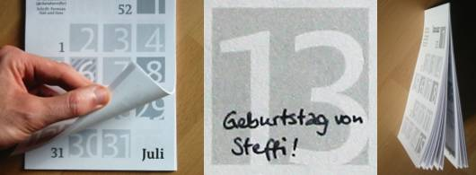

@charak terziffer
Hallo, ich bin Gerhard Großmann aus Regensburg! Über Fragen, Kritik und Anmerkungen freue ich mich sehr – am besten via Twitter oder per Mail an postfach2b [ät] web.de.
Mein RSS-Feed  informiert immer pünktlich über neue Artikel. Alle bisherigen Einträge stehen im Archiv.
informiert immer pünktlich über neue Artikel. Alle bisherigen Einträge stehen im Archiv.
Die Texte in diesem Blog stehen unter einer Creative-Commons-Lizenz 3.0 (Deutschland) mit Namensnennung und Weitergabe unter gleichen Bedingungen. 
Mi, 14. Dez. 2011
366 Tage im Quadrat
Große Zahlen, Platz zum Reinschreiben, mindestens eine Woche als Übersicht, maximal DIN A4 und zudem noch ästhetisch und typografisch angenehm – das waren meine Kriterien für einen Wandkalender 2012. Und wie so oft habe ich das, was ich brauche, nicht gefunden. Da hilft nur eines: selber machen.

Herausgekommen ist ein PDF in DIN A4 mit jeweils zwei Hälften eines Monats. Es gab ihn hier bis Mai als PDF zum Herunterladen und Ausdrucken*. Für den Kalender jedes Blatt halbieren und die Monatshälften sortieren. Meine Empfehlungen für die Heftung:
-
eine Spiralbindung aus dem Copy-Shop, als Aufhängung einen Drahtbügel aus einer Büroklammer,
-
eine Abreiß-Perforation schneiden und dann kleben/klammern,
-
jede Seite exakt mittig lochen und an einen Nagel hängen,
-
obere Kante schmal mit Leim binden und auf der Rückseite mit einem Aufhänger versehen oder
-
alle Blätter in eine Vielzweckklammer („Foldback-Klammer“) stecken und sich halbmonatlich ärgern, wenn alles herausfällt.
Ein Download ist jetzt nicht mehr möglich, auf Anfrage schicke ich das PDF aber noch zu. Übrigens habe ich den Halbmonatskalender unter eine Creative-Commons-Lizenz mit Namensnennung, nicht kommerzieller Nutzung und Weitergabe unter gleichen Bedingungen gestellt ( ). Er darf also gerne weitergegeben werden. Falls jemand den Kalender bearbeiten möchte (Feiertage auf Bundesland angepasst, Farben, etc.), verschicke ich auch gerne die Quelldateien im svg-Format. Die verwendeten Schriften sind die Sans- und Slab-Schnitte aus der PermianTypeface von Ilya Ruderman.
). Er darf also gerne weitergegeben werden. Falls jemand den Kalender bearbeiten möchte (Feiertage auf Bundesland angepasst, Farben, etc.), verschicke ich auch gerne die Quelldateien im svg-Format. Die verwendeten Schriften sind die Sans- und Slab-Schnitte aus der PermianTypeface von Ilya Ruderman.
* Achtung beim Ausdrucken: Einige Drucker benötigen mehr als 1 cm Rand. Damit das Motiv nicht beschnitten wird, muss man „Ränder minimieren“ o. ä. in den Drucker-Einstellungen aktivieren.
---
Rubrik(en):
#typografie